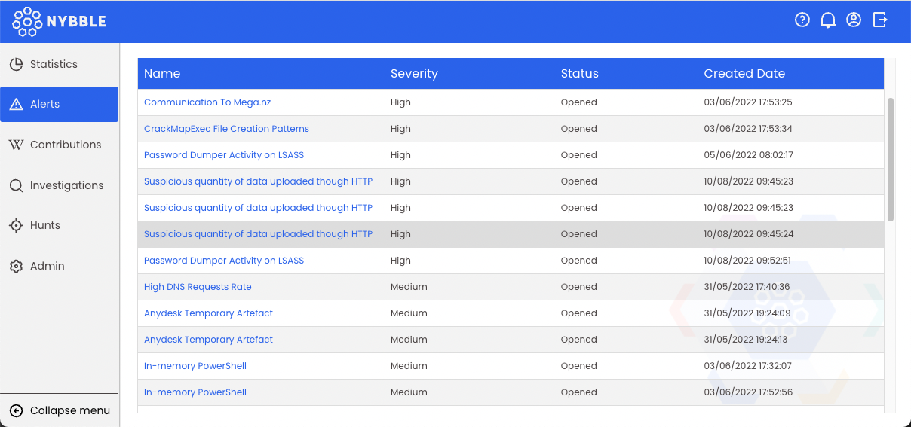

Qualification des alertes
Note
Un profil d'analyste L1 ou d'analyste L2 est requis pour suivre cette documentation
Tableau des alertes

Les alertes sont affichées par sévérité, puis par date de création, la plus ancienne en premier. Pour traiter une alerte, cliquez sur son nom. L'alerte vous sera automatiquement affectée.
Note
Une alerte est automatiquement débloquée après 1h d'inactivité.
Détails et traitement de l'alerte

(1) Résumé
Les informations utiles sont :
- Temps de traitement : horodatage SIEM lorsque l'alerte a été déclenchée
- occurrences : combien de fois une même alerte (champs, règle SIGMA) a été déclenchée sur une période d'1h
(2) Sigma
Toutes les informations utiles extraites du ou des événements, adaptées à la règle SIGMA :
- tags : donnés par SIGMA
- champs : valeurs des principaux champs extraits. Ces champs sont la racine du tri
- références : données par SIGMA, articles externes utiles pour obtenir plus d'informations sur l'alerte
(3) Événement(s) brut(s)
Sur ce panneau, vous voyez une représentation arborescente de l'événement d'origine tel qu'il se présente sur le SIEM avant la correspondance. Utile pour récupérer plus d'informations que celles affichées à l'aide des champs.
(4) Actions
Plusieurs actions sont disponibles :
- Afficher les journaux : ouvre le SIEM correspondant et affiche l'événement dans le panneau de découverte. Vous pouvez faire plus de requêtes pour trouver des informations complémentaires ou du contexte afin de prendre votre décision sur le tri des alertes
- Wiki : page Wiki spécifique et dédiée (selon la règle SIGMA) pour vous aider dans le tri des alertes. Elle s'ouvre sur un panneau latéral pour plus de commodité.
- Libérer/Déverrouiller l'alerte : pas prêt à prendre sa décision ? Relâchez l'alerte pour permettre à un autre analyste de l'examiner.
(5) Décision
Décision finale concernant l'alerte en cours :
- aucun incident : Nybble ajustera la règle pour éviter de nouvelles alertes
- incident : l'équipe Nybble L2 va enquêter
- escalader : vous n'êtes pas en mesure de prendre la décision, ou cela nécessite plus d'investigation, donc vous remontez vers l'équipe L2.